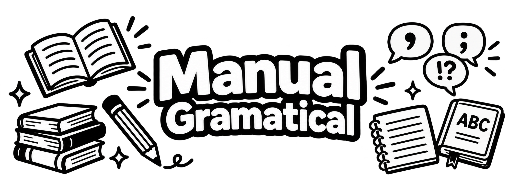

Adverbio
• Definición propia: Es el encargado de darnos más contexto sobre cómo, cuándo, dónde o cuánto ocurre una acción o una característica.
• Banco de palabras: Rápido, hoy, allá, muy, nunca.
• Oración de aplicación: La aplicación se descargó rápidamente a pesar de que el internet estaba lento.